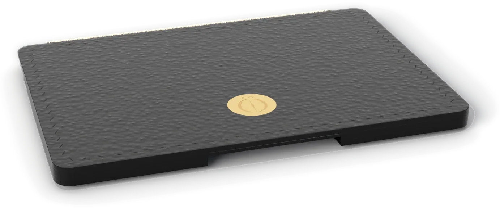
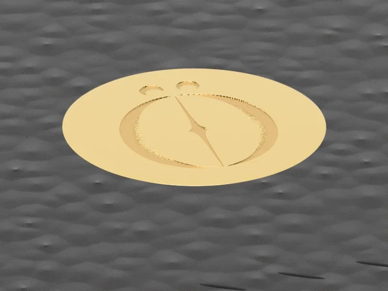
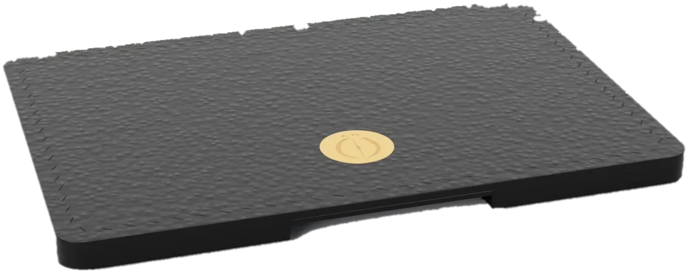

STAND-IN · img/obolo/hero/master.* (the director’s signature shot: The fare: lying in the brass ticket scoop (story/product-stills/DIRECTOR-SHOTS.md; its 144p preview stands in); 8K, 7680 × 4320)
STAND-IN · img/obolo/hero/master.* (the director’s signature shot: The fare: lying in the brass ticket scoop (story/product-stills/DIRECTOR-SHOTS.md; its 144p preview stands in); 8K, 7680 × 4320)Chapter I · Accessories
Öbolo
Card holder
 STAND-IN · img/obolo/front/master.* (departments/apparel/new-pieces-2026-11/build/card-holder/site/card_holder_front_16k.png; 16K, 15360 × 8640)
STAND-IN · img/obolo/front/master.* (departments/apparel/new-pieces-2026-11/build/card-holder/site/card_holder_front_16k.png; 16K, 15360 × 8640)front

STAND-IN · img/obolo/back/master.* (back view, 8K; 8K, 7680 × 4320)back
Chapter I
Öbolo
Card holder
Made to live in a coat pocket. Black calfskin in the house's fine pebble, three slots a side, and the gold disc with the Ö on its back.
- LEATHER
- BLACK CALFSKIN, FINE MATTE PEBBLE
- SLOTS
- THREE A SIDE, A CENTRE POCKET
- DISC
- GOLD, THE Ö ENGRAVED
USD 295 pre-sale USD 250
Made to order.
Keep a seatThe register sees the pre-sale first.
Details
- Pre-sale
- Made to order. We email your delivery date once production is confirmed. Cancel for a full refund any time before production starts.
- Returns
- Exchanges within 14 days of delivery, unused and with tags.
- Care
- Wipe with a soft dry cloth. Keep from rain and heat; if it gets wet, let it dry slowly away from a radiator. Store in its dust bag, stuffed with tissue, out of the light. Leather cleaning by a specialist only. Care
- Size
- The measurements
Close, at 100%
 STAND-IN · img/obolo/detail-edge/master.* (the painted edge, 8K close-up; 8K, 7680 × 4320)
STAND-IN · img/obolo/detail-edge/master.* (the painted edge, 8K close-up; 8K, 7680 × 4320)The painted edge

STAND-IN · img/obolo/detail-disc/master.* (the disc, 8K close-up; 8K, 7680 × 4320)The disc
 STAND-IN · img/obolo/detail-material/master.* (the pebble, 8K close-up; 8K, 7680 × 4320)
STAND-IN · img/obolo/detail-material/master.* (the pebble, 8K close-up; 8K, 7680 × 4320)The pebble


Where it is going
The box office
One ticket on the counter.
SIZE100 × 70 MMCorners rounded at 4 mm.
SLOTSTHREE A SIDEThe slot mouths step down at 55, 48 and 41 mm.
POCKETA CENTRE POCKETOpen along the top, with a thumb notch 24 mm wide and 6 mm deep.
EDGESTITCHED, PAINTED3.0 mm in, a stitch every 3.5 mm; the layers painted as one edge.
DISCGOLD, 12 MMSet flush, the mark engraved 8.9 mm tall.
In the world
Öbolo
Card holder
The box office
Scroll to walk around it
In the same scene